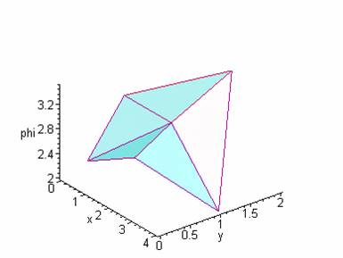
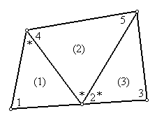

2. ИНТЕРПОЛЯЦИОННЫЕ ПОЛИНОМЫ ДЛЯ ДИСКРЕТИЗОВАННОЙ ОБЛАСТИ
> restart:with(linalg):
Warning, the protected names norm and trace have been redefined and unprotected
В общем виде интерполяционный полином, полученный в п.1 будет иметь вид

где е - индекс, указывающий на отдельный элемент.
Технику включения двумерного элемента в область проиллюстрируем на примере простой пятиэлементной конфигурации, показанной на следующем рисунке
![[Maple OLE 2.0 Object]](images/s_22.gif)
Определим числовые массивы координат пяти узлов и значений искомой функции в указанных точках:
> X:=[1,3,2,4,2,0]: Y:=[0,0,1,1,2,1]: Phi:=[2.5,3,3,2,3.5,3]:
и составим массив, характеризующий всю пятиугольную область:
> G1:=array(
[
[X[1],Y[1],X[2],Y[2],X[3],Y[3],Phi[1],Phi[2],Phi[3]],
[X[3],Y[3],X[2],Y[2],X[4],Y[4],Phi[3],Phi[2],Phi[4]],
[X[5],Y[5],X[3],Y[3],X[4],Y[4],Phi[5],Phi[3],Phi[4]],
[X[6],Y[6],X[3],Y[3],X[5],Y[5],Phi[6],Phi[3],Phi[5]],
[X[1],Y[1],X[3],Y[3],X[6],Y[6],Phi[1],Phi[3],Phi[6]]
]);
![G1 := matrix([[1, 0, 3, 0, 2, 1, 2.5, 3, 3], [2, 1,...](images/s_23.gif)
Зададим вектор коэффициентов В (для вычисления базисных функций) и вектор phi, в котором будут накапливаться полиномы, аппроксимирующие непрерывную функцию внутри каждого элемента
> B:=vector([1,x,y]):phi:=vector(5):
Оформим цикл матричных вычислений
> for e to 5 do
C:=matrix([[1,G1[e,1],G1[e,2]],
[1,G1[e,3],G1[e,4]],
[1,G1[e,5],G1[e,6]] ]):
N:=multiply(B,inverse(C)):
P:=([G1[e,7],G1[e,8],G1[e,9]]):
phi[e]:=multiply(N,P):
od:
Вектор полученных полиномов имеет вид
> evalm(phi);


Изобразим картину распределения Ф на графике
> with(plots):
list_point :=
[
seq(
[
[G1[S,1],G1[S,2],G1[S,7]],
[G1[S,3],G1[S,4],G1[S,8]],
[G1[S,5],G1[S,6],G1[S,9]]
],
S=1..5)]:
polygonplot3d(list_point, scaling=UNCONSTRAINED,
axes=FRAMED, titlefont=[TIMES,ROMAN,12], shading=Z,labels=[x,y,phi], style=hidden,
orientation=[-50,40],lightmodel=light3);
Warning, the name changecoords has been redefined

Упражнение
Получите интерполяционные соотношения для элементов, составляющих область, показанную на рисунке, если заданы координаты точек дискретизации и значения искомой функции в них:

> X:=[0,2,4,0.25,3.75]: Y:=[0,0.25,0.51,2,2.75]: Phi:=[100,80,60,70,45]:
Изобразите ситуацию на графике.